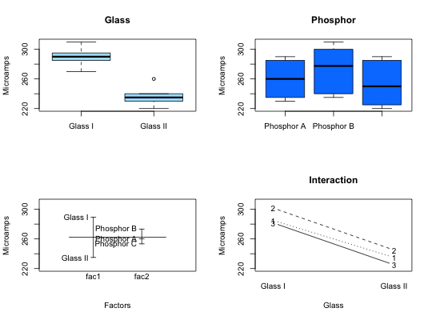

Function creates side-by-side boxplots for each factor, a design plot (means), and an interaction plot.
twoway.plots(Y, fac1, fac2, COL = c("#A9E2FF", "#0080FF"))
# Figure 11.25 Microamps <- c(280, 290, 285, 300, 310, 295, 270, 285, 290, 230, 235, 240, 260, 240, 235, 220, 225, 230) Glass <- factor(c(rep("Glass I", 9), rep("Glass II", 9))) Phosphor <- factor((rep(c(rep("Phosphor A", 3), rep("Phosphor B", 3), rep("Phosphor C", 3)), 2))) twoway.plots(Microamps,Glass,Phosphor)rm(Microamps, Glass, Phosphor)